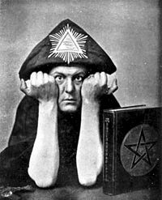

Monday, October the 8th, 2012
back to: title, date or indexes

On the eve of 21 December [1937], Crowley rounded up representatives of the white, black, brown, red, and yellow races—according to William Hickey's column in the Daily Express the next day the black representative was a dancing-girl, the Indian a non-English speaking Bengali Muslim ‘who seemed rather puzzled by the whole business'—and at the foot of Cleopatra's needle at precisely 6.22 a.m. on 22 December as the sun moved into Capricorn, presented each with a copy of [The Book of the Law]. Acceptance was briefly delayed while Crowley made a short speech:
Do what thou wilt shall be the whole of the law. I Ankh-f-n-khonsu, the Priest of the Princes, present you, ______, as representative of your race, with the Book of the Law. It is the charter of Universal Freedom, for every man and woman in the world. Love is the law. Love under will.
Fra. N. , also present together with the Express journalist, named Freedland, recalls the occasion's less spiritual aspects:
We dined together and proceeded to pub and café crawl until the Jew, Indian, Negro and Malayan had been collected. It was very hard keeping the party going until 6 a.m. . . It was one of the craziest evenings I have ever spent, and none of the people picked up knew each other.
Crowley's diary is also light on religious significance:
Freedland—and even N.!—acted nobly. We collected the people of the 5 races, took them to the rooms of one Erskine, a terribly dull party, brightening when we got rid of most of them & started whisky. At Cleopatra's Needle [Mercury, i.e. Wednesday] 6.22 a.m. I presented the 5 copies and made my magical utterance. And so to bed.
22 Dec. 37. Hangover v. bad.
from The Books Of The Beast by Timothy D'Arch Smith (1987)